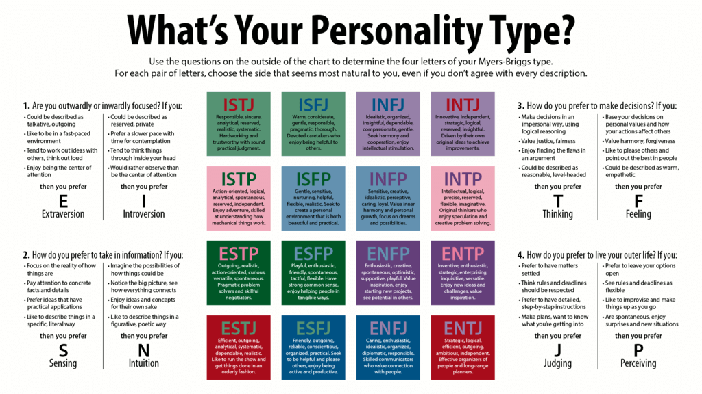

# FelizCaballero.github.io
Project Website
Index Webpage>
================Welcome to my Website================
Lets get started!

Here's a little about myself, I was born in Paterson New Jersey on a Saturday afternoon in May of 1992.
An interesting thing about the city I grew up in is the history behind it and how it played a role in America's industrial revolution.
Cotton and silk fabrics; steam locomotives; continuous rolls of paper; airplane engines. What do these things have in common?
They were all manufactured in the same place - Paterson, NJ.In 1792, Paterson was established, America's first planned industrial city,
centered around the Great Falls of the Passaic River. From humble mills rose industries that changed the face of the United States.
The great Falls has a special place in my heart, I don't know why but just being close and listening to the water fall puts me at ease.
Click here to go to the National Park Service site for the Great Falls
My childhood was a very confusing time, this was mostly due a misunderstanding of myself and why I didn't fit in my environment well.
I finished high school at age 19 and went straight to Rowan University, it was here that I really started to learn about myself
through my limitations. I never had any trouble or even made any efforts in my education before college, I always got good grades
and finished in the top ten of my high school. I was in college for 2 years before I realized I had no study skills and I lacked
a lot of social skills so I nearly flunked out and made no real friends. It was also in college I came across a something called
the Myyers Briggs Type Indicator (MBTI), it's a system that categorizes a persons behaviors, actions and perception into 16
distinct categories.
Click here to go to a popular site for Personality testing

I will be explaining all I can about this system and how it helped me understand my weaknesses and limitations. It also helped explain
my constant search for knowledge and academic improvement, I found a good website that helps keep me intellectually sharp.
Click here to go to a great site for active learners